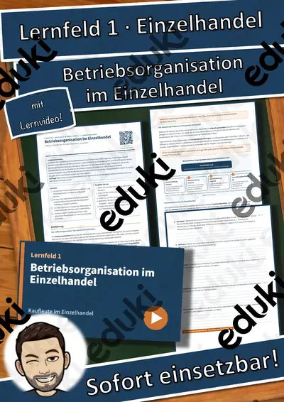
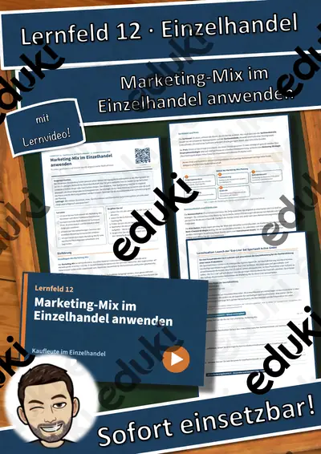

Materialpaket Lernfelder Kaufleute im Einzelhandel Berufsschule Lehrjahr 2: 8 Lernfeld-Hefte mit Übungen, Lösungen und Lernvideo
8 Lernfeld-Hefte Kaufleute im Einzelhandel (Lehrjahr 2) – im Paket zum halben PreisDu unterrichtest Kaufleute im Einzelhandel an der Berufsschule und willst Lernfelder nicht jedes Mal neu aufbereiten? Dieses Paket bündelt 8 Lernfeld-Hefte für das Lehrjahr 2. Jedes Heft enthält Übungen, Lösungen und ein Lernvideo (QR-Code): Du sparst viel Vorbereitungszeit, die Auszubildenden können zu Hause nacharbeiten.
Preisvorteil und Zeitersparnis: Einzeln gekauft kosten die 8 Materialien regulär zusammen 23,92 €. Im Paket zahlst du nur 11,96 € und sparst damit rund 50 %. Dazu sparst du dir das Zusammensuchen und Abstimmen: Alles passt schon zusammen, ist sofort einsetzbar und liegt in einem Download bereit. Alle Materialien sind sorgfältig gearbeitet, vom Autor geprüft und enthalten Lösungen bzw. Musterlösungen, sodass du dir auch die Korrektur-Vorbereitung sparst.
Die 8 Materialien im PaketLF 7 Kaufleute im Einzelhandel: Für den Berufsschulunterricht im Ausbildungsberuf Kaufmann/-frau im Einzelhandel, Lernfeld 7 „Waren annehmen, lagern und pflegen“ (2.LF 6 Kaufleute im Einzelhandel: Für den Berufsschulunterricht im Ausbildungsberuf Kaufmann/-frau im Einzelhandel, Lernfeld 6 „Waren beschaffen“ (2.LF 9 Kaufleute im Einzelhandel: Für den Berufsschulunterricht im Ausbildungsberuf Kaufmann/-frau im Einzelhandel, Lernfeld 9 „Preispolitische Maßnahmen vorbereiten und durchführen“ (2.LF 6 Kaufleute im Einzelhandel: Für den Berufsschulunterricht im Ausbildungsberuf Kaufmann/-frau im Einzelhandel, Lernfeld 6 „Waren beschaffen“ (2.LF 9 Kaufleute im Einzelhandel: Für den Berufsschulunterricht im Ausbildungsberuf Kaufmann/-frau im Einzelhandel, Lernfeld 9 „Preispolitische Maßnahmen vorbereiten und durchführen“ (2.LF 10 Kaufleute im EinzelhandelLF 10 Kaufleute im EinzelhandelLF 8 Kaufleute im Einzelhandel: Für den Berufsschulunterricht im Ausbildungsberuf Kaufmann/-frau im Einzelhandel, Lernfeld 8 „Geschäftsprozesse erfassen und kontrollieren“ (2.Lehrplanbezug (Rahmenlehrplan der Kultusministerkonferenz für den Ausbildungsberuf, Berufsschule, Ausbildungsjahr 2)Lernfeld 6 „Waren beschaffen“: Kaufmann/-frau im Einzelhandel: Bezugskalkulation: Den Einstandspreis berechnen, Angebotsvergleich und Bestellvorgang
Lernfeld 7 „Waren annehmen, lagern und pflegen“: Kaufmann/-frau im Einzelhandel: Lagersteuerung: Bestände und Umschlag berechnen
Lernfeld 8 „Geschäftsprozesse erfassen und kontrollieren“: Kaufmann/-frau im Einzelhandel: Inventur und Inventar: Durchführung und Bewertung
Lernfeld 9 „Preispolitische Maßnahmen vorbereiten und durchführen“: Kaufmann/-frau im Einzelhandel: Kalkulationszuschlag, Kalkulationsfaktor und Handelsspanne, Preisgestaltung: Vorwärts- und Rückwärtskalkulation
Lernfeld 10 „Besondere Verkaufssituationen bewältigen“: Kaufmann/-frau im Einzelhandel: Gewährleistung und Garantie bei Reklamationen, Finanzierungskauf und Ratenzahlung
Jedes Heft enthält
Übungen zum Lernfeld
Lösungen
Lernvideo über QR-Code
Insgesamt umfasst das Paket 68 Seiten.
Einsatzmöglichkeiten
Die Hefte eignen sich für Unterricht, Übungsphasen, Wiederholung, Vertretung und das selbstständige Nacharbeiten.
Viel Freude mit deiner Klasse wünscht dir Snice!
Ähnliche Materialien

Materialpaket Lernfelder Kaufleute im Einzelhandel Berufsschule Lehrjahr 3: 6 Lernfeld-Hefte mit Übungen, Lösungen und Lernvideo

Materialpaket Lernfelder Kaufleute im Einzelhandel Berufsschule Lehrjahr 1: 8 Lernfeld-Hefte mit Übungen, Lösungen und Lernvideo

Materialpaket Lernfelder Zahnmedizinische Fachangestellte Berufsschule Lehrjahr 2: 7 Lernfeld-Hefte mit Übungen, Lösungen und Lernvideo

Materialpaket Lernfelder Zahnmedizinische Fachangestellte Berufsschule Lehrjahr 1: 5 Lernfeld-Hefte mit Übungen, Lösungen und Lernvideo

LF 1 Kaufleute im Einzelhandel: Betriebsorganisation im Einzelhandel – Übungen, Lösungen + Lernvideo

LF 6 Kaufleute im Einzelhandel: Angebotsvergleich und Bestellvorgang – Übungen, Lösungen + Lernvideo

LF 10 Kaufleute im Einzelhandel: Finanzierungskauf und Ratenzahlung – Übungen, Lösungen + Lernvideo
